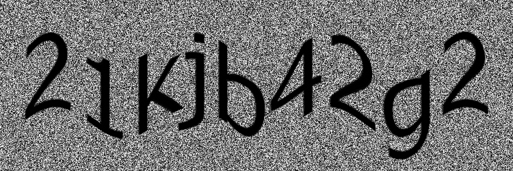

Question 11
Please enter the word pictured into the textbox below

Question 12
Please enter the word pictured into the textbox below
Question 13
Please enter the word pictured into the textbox below